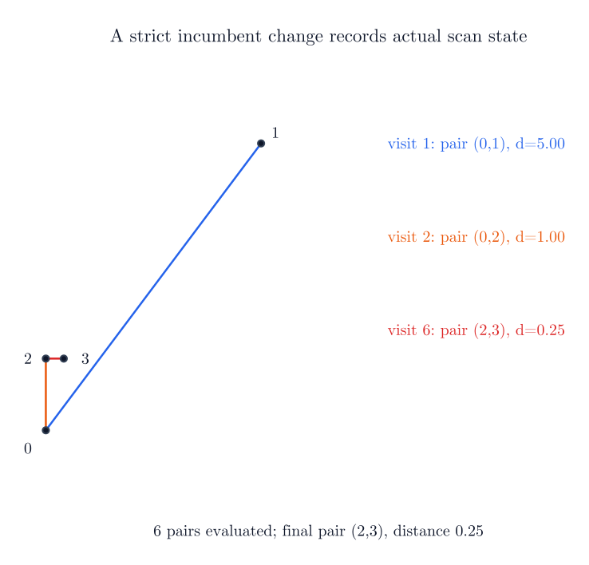
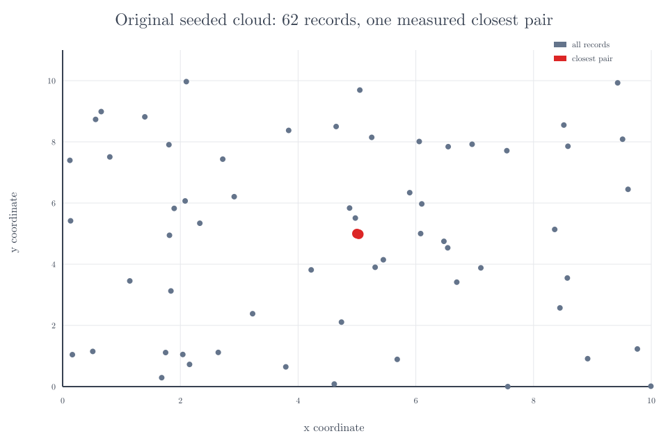
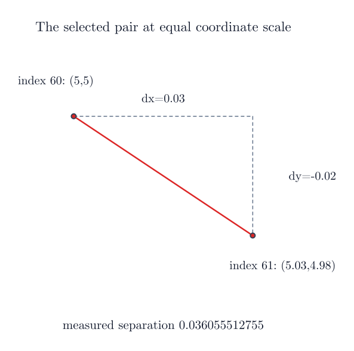
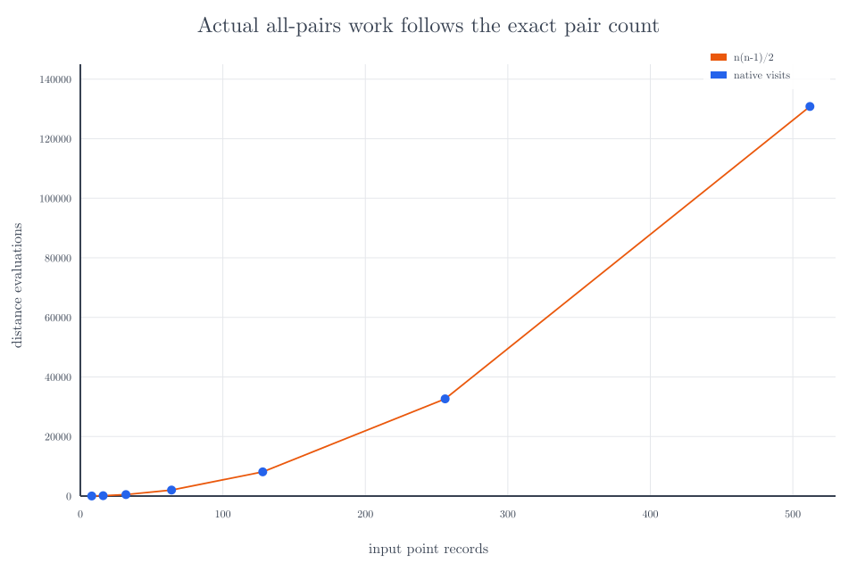

Closest Pair: An Auditable All-Pairs Search
Abstract
Given planar point records, identify the two distinct input records with the smallest Euclidean separation. Duplicate locations, tied distances and extreme coordinate scales make even a short scan worth specifying carefully. We derive the all-pairs invariant, inspect actual incumbent improvements, retain the original seeded cloud with its planted pair, and measure exact pair work. Canonical C++ now validates finite coordinates, compares widened distances, returns original indices and offers a bounded actual-improvement trace. A rounding counterexample distinguishes the minimum computed distance from an exact geometric predicate.
Four points and three actual improvements
Take points 0=(0,0), 1=(3,4), 2=(0,1), 3=(0.25,1). Visit pairs in original index order: (0,1), (0,2), (0,3), (1,2), (1,3), (2,3). The first distance, five, initializes the incumbent. Visit two reduces it to one, and visit six reduces it to 0.25. These three states are captured by the executing kernel; the other visits still occur but do not improve the incumbent.
The native method diagram uses one coordinate scale on both axes. Coloured segments show the three actual incumbent pairs, and the table gives their one-based pair-visit ordinals. Point labels identify input records, not a coordinate-sorted permutation.
#include <dm/dm.hpp>
int main() {
std::filesystem::create_directories("build");
const std::vector<dm::geometry::Point2D> points{{0,0},{3,4},{0,1},{0.25,1}};
const auto trace=dm::geometry::closest_pair_trace(points);
const std::vector<dm::RGB> colours{{37,99,235},{234,88,12},{220,38,38}};
dm::graphics::Diagram figure(90,1100);
std::print("| actual pair visit | new incumbent pair | measured distance |\n| ---: | :--- | ---: |\n");
for(std::size_t k=0;k<trace.improvements.size();++k) {
const auto& step=trace.improvements[k];const auto a=points[step.first],b=points[step.second];
std::print("| {} | ({},{}) | {:.6f} |\n",step.comparison,step.first,step.second,step.distance);
dm::graphics::DiagramStroke stroke;stroke.color=colours[k];stroke.width=2.5;
figure.path({{a.x,a.y},{b.x,b.y}},stroke)
.text({6,4-1.3*k},std::format("visit {}: pair ({},{}), d={:.2f}",step.comparison,step.first,step.second,step.distance),20,colours[k]);
}
for(std::size_t i=0;i<points.size();++i) {
const auto p=points[i];figure.ellipse({p.x,p.y},0.045,0.045,{15,23,42});
const auto label=i==0?dm::graphics::DiagramPoint{-0.25,-0.25}:i==1?dm::graphics::DiagramPoint{3.2,4.15}:i==2?dm::graphics::DiagramPoint{-0.25,1}:dm::graphics::DiagramPoint{0.55,1};
figure.text(label,std::to_string(i),20);
}
figure.text({3.8,5.5},"A strict incumbent change records actual scan state",23)
.text({3.8,-1.4},std::format("{} pairs evaluated; final pair ({},{}), distance {}",trace.work.pair_visits,trace.result.first,trace.result.second,trace.result.distance),20)
.save_svg("build/closest_pair_method.svg");
if(trace.result.first!=2 || trace.result.second!=3 || trace.result.distance!=0.25L)return 1;
}| actual pair visit | new incumbent pair | measured distance |
|---|---|---|
| 1 | (0,1) | 5.000000 |
| 2 | (0,2) | 1.000000 |
| 6 | (2,3) | 0.250000 |

What the scan minimizes
For distinct input positions i<j, define
Distinct records may have equal coordinates, yielding distance zero. The search does not deduplicate or sort them. It initializes from the first pair and replaces the incumbent only on a strict improvement. Equal computed distances therefore retain the lexicographically first original index pair.
After processing the first k candidate pairs, the incumbent is the first pair attaining their minimum computed distance. Initialization establishes this invariant; comparing the next finite value either preserves that incumbent or replaces it with a strict smaller value. Induction gives the minimum of all computed pair distances at termination. That proof does not make floating distance evaluations exact in real arithmetic.
The implementation forms widened coordinate differences and calls widened hypot for every pair. The old report claimed squared-distance comparisons and one final square root, but the old code actually called distance for every pair through a double squared-distance expression. Large squares could overflow, tiny squares could underflow, and nonfinite points were not rejected. Avoiding those intermediate squares fixes those failures without changing the quadratic search strategy. The separate legacy geometry squared_distance helper is not an exact-arithmetic oracle for this search.
All coordinates validate before a positive complete pair-work cap. Fewer than two points reject, including empty input. The indexed result retains widened distance and copied points; the existing closest_pair call retains its original result layout and returns a checked finite-double distance. An out-of-range selected legacy distance throws. Both use one kernel, and tracing records actual strict changes without replay.
The original seeded cloud and planted pair
The original example generated sixty MT19937 points in [0,10)² with seed 424242, then appended (5,5) and (5.03,4.98). The reusable native rectangle generator preserves that draw order: x then y for each record. It uses local engine state and standard uniform-real distributions. The engine is specified, but distribution-to-floating mappings can differ between standard libraries; the seed is a reproducibility control within the selected implementation, not a portable byte-level dataset specification.
For this checked execution, records 60 and 61 are the selected pair among all 62 records, after 1,891 pair evaluations. Planting a pair does not guarantee that it beats every background pair under arbitrary seeds or sample counts; the search measures that fact here. There is no external dataset to download.
#include <dm/dm.hpp>
int main() {
std::filesystem::create_directories("build");
auto points=dm::geometry::uniform_rectangle_points(60,424242);
points.push_back({5,5});points.push_back({5.03,4.98});
const auto trace=dm::geometry::closest_pair_trace(points);const auto& result=trace.result;
std::print("| points | selected input indices | measured distance | pair visits | actual improvements |\n| ---: | :--- | ---: | ---: | ---: |\n| {} | ({},{}) | {:.12f} | {} | {} |\n",points.size(),result.first,result.second,result.distance,trace.work.pair_visits,trace.improvements.size());
std::vector<double> x,y;for(const auto p:points){x.push_back(p.x);y.push_back(p.y);}
auto plot=dm::graphics::RPlot::create();
plot.points(x,y,"cloud",{100,116,139},4)
.line({result.a.x,result.b.x},{result.a.y,result.b.y},"winner",{220,38,38},2)
.points({result.a.x,result.b.x},{result.a.y,result.b.y},"winner",{220,38,38},7)
.legend({"all records","closest pair"},{{100,116,139},{220,38,38}})
.title("Original seeded cloud: 62 records, one measured closest pair")
.x_label("x coordinate").y_label("y coordinate")
.x_limits(0,10).y_limits(0,11).save_svg("build/closest_pair_cloud.svg");
if(result.first!=60 || result.second!=61)return 1;
}| points | selected input indices | measured distance | pair visits | actual improvements |
|---|---|---|---|---|
| 62 | (60,61) | 0.036055512755 | 1891 | 8 |

Expanding the selected pair's right triangle
For the ideal decimal coordinates, Δx=0.03 and Δy=−0.02, so d=√(0.03²+0.02²)=√0.0013≈0.036055512755. Stored double coordinates are rounded decimal inputs; the program prints their actual widened differences. The equal-scale native diagram expands only the selected pair and its two orthogonal coordinate differences. Marker radii are presentation choices, not physical disks or search thresholds.
#include <dm/dm.hpp>
int main() {
std::filesystem::create_directories("build");
auto points=dm::geometry::uniform_rectangle_points(60,424242);
points.push_back({5,5});points.push_back({5.03,4.98});
const auto result=dm::geometry::closest_pair_indexed(points);const auto a=result.a,b=result.b;
const long double dx=static_cast<long double>(b.x)-a.x,dy=static_cast<long double>(b.y)-a.y;
std::print("| measured quantity | actual value |\n| :--- | ---: |\n| delta x | {:.18g} |\n| delta y | {:.18g} |\n| widened distance | {:.18g} |\n",dx,dy,result.distance);
dm::graphics::Diagram figure(10000,1100);
dm::graphics::DiagramStroke legs;legs.dashed=true;legs.color={100,116,139};legs.width=1.5;
dm::graphics::DiagramStroke diagonal;diagonal.color={220,38,38};diagonal.width=2.5;
figure.path({{a.x,a.y},{b.x,a.y},{b.x,b.y}},legs)
.path({{a.x,a.y},{b.x,b.y}},diagonal)
.ellipse({a.x,a.y},0.0004,0.0004,{220,38,38})
.ellipse({b.x,b.y},0.0004,0.0004,{220,38,38})
.text({a.x-0.003,a.y+0.006},std::format("index {}: (5,5)",result.first),20)
.text({b.x+0.005,b.y-0.005},std::format("index {}: (5.03,4.98)",result.second),20)
.text({5.015,5.003},std::format("dx={:.2f}",dx),20)
.text({5.040,4.990},std::format("dy={:.2f}",dy),20)
.text({5.015,5.015},"The selected pair at equal coordinate scale",23)
.text({5.015,4.965},std::format("measured separation {:.12f}",result.distance),21)
.save_svg("build/closest_pair_zoom.svg");
}| measured quantity | actual value |
|---|---|
| delta x | 0.0300000000000002487 |
| delta y | -0.0199999999999995737 |
| widened distance | 0.0360555127546398634 |

Work grows with pairs, not improvement records
The exact unordered-pair count is
The kernel evaluates every pair, including after a zero distance is found. Ordinary indexed search uses O(1) auxiliary storage and Θ(n²) distance work. A trace adds O(K) owned records for K strict improvements, with K≤C(n). An often-small observed K does not reduce the number of distance evaluations or establish a subquadratic bound. On doubling input size, C(2n)/C(n)=4+2/(n−1), tending to four.
The next plot compares actual counted distance evaluations to the exact formula. These are logical operations, not timings or empirical speedups. Faster planar divide-and-conquer algorithms use a maintained y-order and a bounded-neighbour strip merge to achieve O(n log n); that is background, not the algorithm or a performance promise of this all-pairs API.
#include <dm/dm.hpp>
int main() {
std::filesystem::create_directories("build");
std::vector<double> size,measured,formula;
std::print("| points n | actual pair visits | n(n-1)/2 | actual improvements |\n| ---: | ---: | ---: | ---: |\n");
for(std::size_t n=8;n<=512;n*=2) {
const auto points=dm::geometry::uniform_rectangle_points(n,424242);
const auto trace=dm::geometry::closest_pair_trace(points);const auto expected=n*(n-1)/2;
if(trace.work.pair_visits!=expected)return 1;
size.push_back(n);measured.push_back(trace.work.distance_evaluations);formula.push_back(expected);
std::print("| {} | {} | {} | {} |\n",n,trace.work.pair_visits,expected,trace.improvements.size());
}
auto plot=dm::graphics::RPlot::create();
plot.line(size,formula,"formula",{234,88,12},1.8)
.points(size,measured,"actual",{37,99,235},5)
.legend({"n(n-1)/2","native visits"},{{234,88,12},{37,99,235}})
.title("Actual all-pairs work follows the exact pair count")
.x_label("input point records").y_label("distance evaluations")
.x_limits(0,530).y_limits(0,145000).save_svg("build/closest_pair_work.svg");
}| points n | actual pair visits | n(n-1)/2 | actual improvements |
|---|---|---|---|
| 8 | 28 | 28 | 6 |
| 16 | 120 | 120 | 4 |
| 32 | 496 | 496 | 6 |
| 64 | 2016 | 2016 | 7 |
| 128 | 8128 | 8128 | 11 |
| 256 | 32640 | 32640 | 16 |
| 512 | 130816 | 130816 | 14 |

Caps, extreme scales and a genuine rounded tie
The positive pair cap checks the complete forecast after validating every coordinate and before any pair execution. The positive improvement cap applies only to traces and is enforced online against actual improvements, including initialization. It does not reserve space for every pair or reject a one-record trace merely because many pairs exist. Zero caps mean unlimited. Any failure returns no partial result or trace. Records and selected point copies own their storage independently of the input.
#include <dm/dm.hpp>
int main() {
const std::vector<dm::geometry::Point2D> points{{0,0},{3,4},{0,1},{0.25,1}};
dm::geometry::ClosestPairOptions options;options.max_pair_visits=6;options.max_improvements=3;
const auto exact=dm::geometry::closest_pair_trace(points,options);
bool pair_rejected=false,record_rejected=false,invalid_first=false,legacy_overflow=false;
options.max_pair_visits=5;
try { (void)dm::geometry::closest_pair_trace(points,options); }catch(const std::length_error&) { pair_rejected=true; }
options.max_pair_visits=6;options.max_improvements=2;
try { (void)dm::geometry::closest_pair_trace(points,options); }catch(const std::length_error&) { record_rejected=true; }
const auto unrecorded=dm::geometry::closest_pair_indexed(points,options);
options.max_pair_visits=1;
try { (void)dm::geometry::closest_pair_trace({{0,0},{0,0},{std::numeric_limits<double>::quiet_NaN(),0}},options); }catch(const std::invalid_argument&) { invalid_first=true; }
std::print("| checked limit | expected outcome observed |\n| :--- | :--- |\n| pair cap one below six | {} |\n| actual trace cap one below three | {} |\n| invalid trailing point before pair cap | {} |\n| untraced call ignores trace cap | {} |\n",pair_rejected,record_rejected,invalid_first,unrecorded.distance==0.25L);
std::print("\n| coordinate scale | selected pair | measured distance |\n| ---: | :--- | ---: |\n");
for(const double scale:{1e-200,1e200}) {
const auto r=dm::geometry::closest_pair_indexed({{0,0},{3*scale,4*scale},{0,scale}});
std::print("| {:.0e} | ({},{}) | {:.9e} |\n",scale,r.first,r.second,r.distance);
if(r.first!=0 || r.second!=2)return 1;
}
const double big=std::numeric_limits<double>::max();
const auto wide=dm::geometry::closest_pair_indexed({{-big,0},{big,0}});
try { (void)dm::geometry::closest_pair({{-big,0},{big,0}}); }catch(const std::overflow_error&) { legacy_overflow=true; }
std::print("\nWidened selected distance exceeds double: {}; legacy conversion throws: {}.\n",wide.distance>big,legacy_overflow);
const double epsilon=std::ldexp(1.0,-std::numeric_limits<long double>::digits);
const auto rounded=dm::geometry::closest_pair_trace({{0,0},{1,epsilon},{10,0},{11,0}});
std::print("epsilon={:.9e}; selected pair ({},{}); rounded distance {}; equal-incumbent candidates {}.\n",epsilon,rounded.result.first,rounded.result.second,rounded.result.distance,rounded.work.ties);
if(!pair_rejected || !record_rejected || !invalid_first || !legacy_overflow || exact.improvements.size()!=3)return 1;
}| checked limit | expected outcome observed |
|---|---|
| pair cap one below six | true |
| actual trace cap one below three | true |
| invalid trailing point before pair cap | true |
| untraced call ignores trace cap | true |
| coordinate scale | selected pair | measured distance |
|---|---|---|
| 1e-200 | (0,2) | 1.000000000e-200 |
| 1e+200 | (0,2) | 1.000000000e+200 |
Widened selected distance exceeds double: true; legacy conversion throws: true. epsilon=5.421010862e-20; selected pair (0,1); rounded distance 1; equal-incumbent candidates 1.
In the last construction ε is positive and exactly representable. Pair (0,1) has true distance √(1+ε²)>1; pair (2,3) has true distance exactly one. Their widened hypot values both round to one on this platform, so the first measured tie retains (0,1). Thus the scan correctly implements its computed-distance contract while returning a pair that is not the exact-real closest pair. Widening is valuable range protection, not arbitrary precision or a certified geometric comparison.
Seventeen new native tests pass address and undefined-behaviour sanitizers. Exact integer squared-distance oracles check every improvement, index and named counter for all 6,561 ordered four-record tuples on a 3×3 grid, all 502 nontrivial grid subsets, and 1,000 seeded integer clouds. Another 720 input permutations and exactly representable similarity transforms check tie identity. Cases also cover smallest subnormal distances, huge irrelevant pairs, widened selected distances beyond double, full validation before limits, online record caps, zero-distance scans, generator bounds/reproducibility and owned copies. The original sixty draws and planted pair are checked directly against the original MT19937 construction. Existing legacy and formatting regressions pass.
Python's existing legacy binding retains its result shape and updated help. Its scoped SWIG rule maps invalid input to ValueError and selected-distance overflow to OverflowError. A targeted generated-header SWIG probe runs the binding tests for loading, owned results, ties, extreme scales and those errors; this is separate from a full installed-package build. The indexed and trace APIs demonstrated in this report are native C++ APIs.
What the analysis establishes
Every unordered candidate contributes to a precisely counted all-pairs scan. The native trace explains how the minimum computed distance emerges, and original indices preserve duplicate and tie identities. The original seeded cloud is now a complete executable example with a readable geometric zoom. Widened arithmetic avoids false squared-distance zero/infinity results, while the explicit rounded-tie construction sets the limit of the correctness claim. Large-scale or exact-predicate requirements need an appropriate different algorithm or arithmetic contract.
References
- M. I. Shamos and D. Hoey (1975), Closest-point problems, 16th IEEE Symposium on Foundations of Computer Science, 151–162, https://doi.org/10.1109/SFCS.1975.8. Background for faster closest-point methods; this report's kernel deliberately enumerates all unordered pairs.
- Divide and Conquer, closest-pair reading hosted by Carnegie Mellon: https://www.cs.cmu.edu/~avrim/451f12/lectures/lect1120-closest-pair2.pdf. The maintained strip merge explains the O(n log n) alternative, not this API.
- Canonical contracts: include/datamunge/geometry/closest_pair.hpp, include/datamunge/geometry/closest_pair_search.hpp and src/datamunge/geometry/closest_pair.cpp. Complete editable C++ programs above generate every figure as a local file.